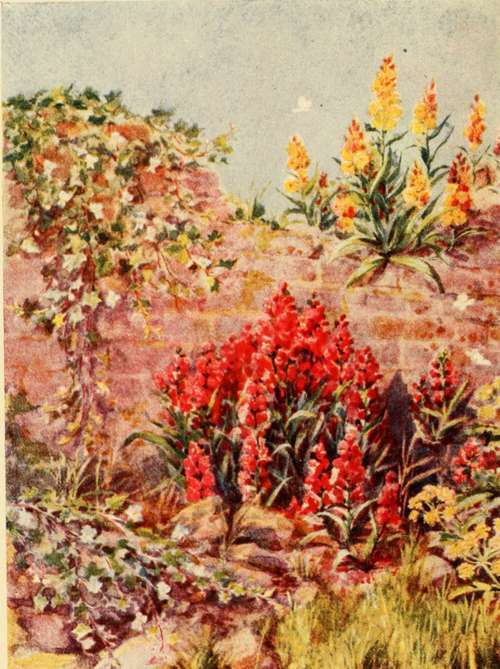

Introduction
Description
This section is from the book "Town Gardening", by Mary Hampden. Also available from Amazon: Town Gardening.
Introduction
The Town Dweller's Wants. What has been done. About Sour Soil. Watering Pot Plants. About a Sooty Atmosphere. What may be done. Way to do it.
A MAN who pined to cultivate orchids in a town back yard would be deserving of scorn instead of sympathy, but the man with a great love for flowers, and a longing to have some beautiful blossom and foliage in the back yard, merits all possible encouragement. A woman who yearns to cultivate flowers for the house can do it surprisingly well with no better aids than a sunny balcony, boxes, pots and sheets of glass. And the dingiest town house can be transformed, in spring, summer, autumn, aye, and even winter, by quite a moderate outlay of time, money, and skill in gardening.
But that is just where the difficulty comes in—as a rule the skill is lacking ; there may be general knowledge, bright ideas, rudimentary understanding of plants, but the attempts end in failure for want of being guided.
There are as many different wants, of course, as there are houses—and individuals. It is best to set personal predilections on one side at first, and consider which trees, shrubs, climbers and other plants are likely to live and flourish, leaving till later experiments with subjects that may exist, but are so unfitted to the proposed environment that their appearance will, perhaps, never be more than third rate. For myself, I would rather have a display of perfect ivy, and brighten it annually by calceolarias, chrysanthemums, daffodils and crocuses —all in gold—which can be absolutely relied upon, than I would have roses all blighted, waxen hyacinths and begonias all soot spotted, and pansies the size of lawn daisies.
Most householders are restricted, or influenced, by what has been done by their predecessors. This is usually wise. If the Virginian creeper is a gorgeous drapery, for heaven's sake let the tapestry hang, and do not plant puny wistarias and clematises instead ; for both ' ampelopsis ' (as the mere amateur loves to call it) and ivy (which he never thinks of mentioning as ' hedera helix ') need be but backgrounds to new ornaments.
The disheartened man nearly always explains his gardening misfortunes by saying, 'It's the atmosphere—the soots, you know.' Ten to one sour soil has been the murdering enemy. People are only real gardeners when they have come to look upon the hoe—used directly plants look sickly, in preference to dosing with drugs or foods— as worth its weight in gold. Sour compost in receptacles in which plants grow is seldom suspected of killing them, but that, again, is mofe often the cause of failure than is the sooty atmosphere.
How does pot, tub or box soil become sour if it was sweet compost to start ? Well, water releases the manurial constituents, which should be assimilated by the plants or drained off through the holes below : if those holes or cracks in board are insufficient or choked up, the moisture is stagnant and turns putrid, as a foul green pond. If the soil is always more or less wet, through too frequent watering, there is no evaporation, bad gases cannot escape, and the whole becomes poisoned.
There is a safe rule for testing if a pot plant needs watering. Rap the side of the pottery with the knuckles half-way down, and if the ball of soil inside is dry enough for watering to be advisable, there will be a sharp ringing sound, not a dull muffled noise. Wooden receptacles can be fairly well tested in the same fashion if they are painted. If they are of bare wood all one has to do is to use one's eyes intelligently, for wood looks darker when it is damp than when it is dry.
Some plants, etc., require a lot more water than others, but none flourish in soil that is mere mud. The oleander is often stood with its pot in a saucer containing water, but that is merely to wet the bottom compost and enable the roots to drink as they will; and gardeners always put two or three nuggets or larger lumps of charcoal down low, but not quite at the bottom, so that a filtering process goes on. It is an excellent plan to add little bits of charcoal, bought from a florist for the purpose, to every pot, box, tub, basket, etc. etc.
Draughts kill countless plants, shrubs, and even trees. The side alley by the house, usually the tradesman's path, makes a bad wind-shaft.
A Corner In The Town Garden.
The domestic animals are terribly destructive ; it is no use hoping seeds will ' come up ' if cats are in the habit of scratching among them, and the soil is soon poisoned when a dog cannot be kept off beds and borders. Sparrows nip off bits of flower or leaf occasionally—the golden crocuses and honey-sweet primroses, and the tips of the ' grass ' of pinks, for example—but birds do more good than harm, I am convinced. A trough of water should be put out for them, especially in the earliest spring, when easterly winds are drying, and if a few handfuls of grass, chickweed, lettuce or watercress are laid near the pinks, the foliage of the latter will probably escape attack.
Soot is a great evil, undoubtedly, yet the use of the syringe effects wonderful cures. If we leave our evergreen and other shrubs, our climbers that should be glossy, our rose trees that ought to be clean, for only chance rain to wash, we shall certainly see them sicken. We must syringe above and below the leaves, dip boughs and sprays in buckets where we can, and water often overhead, using the fine rose of the pot. For that which we call ' soot ' is, in reality, a compound of many chemicals. It is not possible to wash the petals of a begonia without bruising them, but we can sponge outside-growing foliage, as we do sponge our indoor aspidistras ; and pot roses, geraniums, carnations, very many flowers too, may be cleansed by spraying them tenderly with quite clear water through a scent-fountain.
The more beauty there is within daily sight of town dwellers, the happier must they be ; the more attractive the home the greater becomes its title to the name. For if ' four walls do not a prison make,' neither do they make a home. Green leaves and gay blooms should be reckoned as the rights of every dwelling.
Continue to: